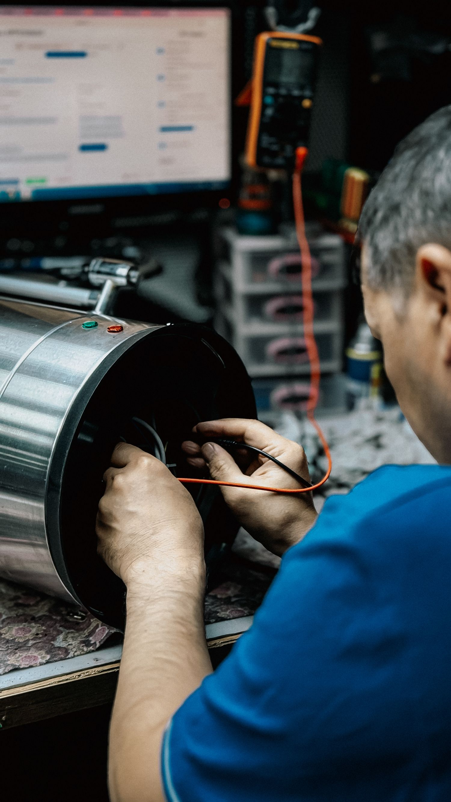
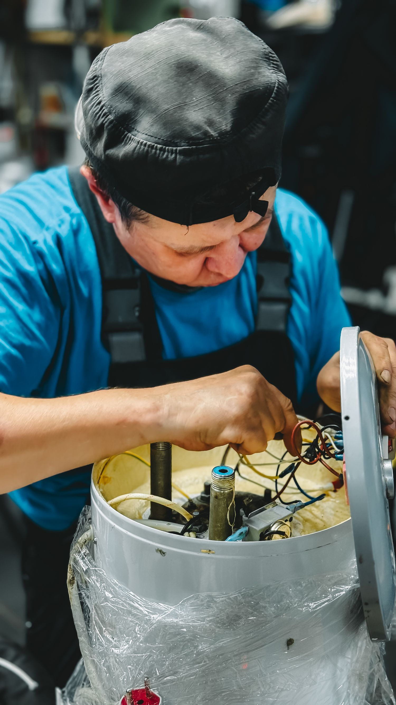
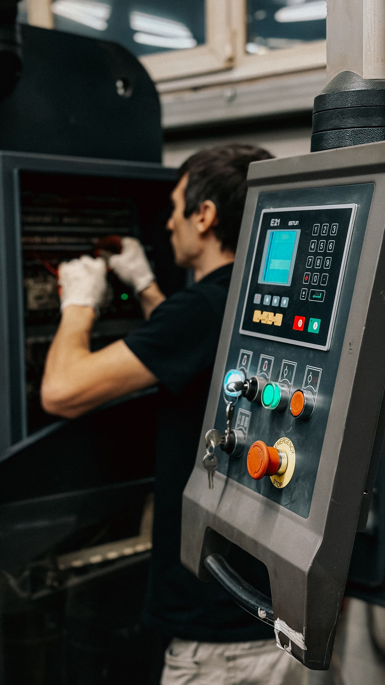

Sua empresa.
Nosso compromisso.
A Manutech Industrial atua com manutenção e automação industrial em Balneário Piçarras/SC. Atendimento voltado à necessidade da sua empresa, com foco em um serviço rápido e confiável.

O cuidado começa
pelo seu cenário.
Conte qual equipamento ou processo precisa de atenção. A partir dessas informações, converse sobre o serviço, a disponibilidade e as condições para atender sua demanda.
Do contexto da operação ao escopo do atendimento, cada consulta começa por entender o que a sua empresa precisa.
Apresentar minha necessidade ↗Cuidar da
sua operação.
Manutenção e automação são as frentes de atuação informadas pela Manutech. Selecione uma delas para preparar seu contato.
Manutenção
industrial
Converse sobre a necessidade de manutenção dos equipamentos da sua empresa. Informe o tipo de máquina, o contexto e o que precisa ser avaliado para consultar o escopo de atendimento.

Automação
industrial
Apresente o processo ou equipamento que você deseja automatizar ou aprimorar. A consulta ajuda a alinhar os objetivos da operação com as possibilidades de serviço da Manutech.

O trabalho
em foco.
Equipamentos, controles e ambientes industriais. Fotografias de banco para ilustrar o contexto dos serviços, sem representar trabalhos próprios da Manutech.
Equipamentos
Manutenção · imagem ilustrativa
Controles
Automação · imagem ilustrativa
A operação
Ambiente industrial · imagem ilustrativa
3 referências exibidas.
Um contato.
O próximo passo.
Uma boa conversa técnica começa com as informações certas. Organize sua solicitação antes de falar com a Manutech.
Conte o cenário
Informe o equipamento, o tipo de operação e a cidade em que sua empresa está.
Alinhe o escopo
Converse sobre a necessidade de manutenção ou o objetivo de automação do processo.
Combine o serviço
Consulte disponibilidade, valores e condições de execução diretamente com a Manutech.
Vamos falar da
sua indústria.
Escolha o assunto e conte o contexto.
A conversa continua pelo WhatsApp.
Balneário Piçarras / SC
Antes de
começar.
Quais serviços a Manutech oferece?
Manutenção e automação industrial são as atividades informadas. Apresente seu equipamento ou processo para consultar quais serviços podem atender à necessidade da sua empresa.
Onde a empresa atende?
A localização informada é Balneário Piçarras, Santa Catarina. Consulte a disponibilidade de atendimento para sua cidade e endereço diretamente pelo WhatsApp.
Como solicitar um orçamento?
Escolha o serviço e envie as informações do equipamento, a necessidade e a localização da empresa. Valores e condições são alinhados diretamente com a Manutech após entender o contexto.
Há atendimento imediato?
Consulte a disponibilidade e os prazos pelo WhatsApp. O site não confirma agendamento ou prazo de execução automaticamente.
As imagens mostram serviços da Manutech?
As fotografias são ilustrativas, provenientes de banco de imagens. Para conhecer referências e serviços próprios da Manutech, converse diretamente com a empresa.
Piçarras, SC.
Vamos conversar.
Balneário Piçarras é a localização informada no perfil. O mapa mostra a cidade como referência de atendimento, sem indicar sede ou endereço comercial. Consulte a disponibilidade para a sua empresa.
Abrir cidade no Google Maps ↗